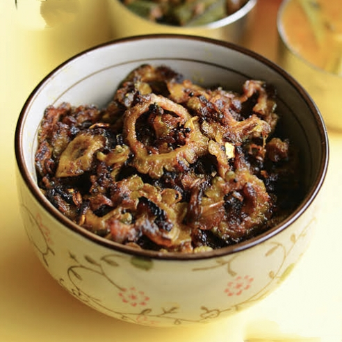

1 tbsp gram flour (besan) or rice flour (for crispiness)
Curry leaves or coriander leaves (for garnish, optional)

Instructions:
1. Prepare the bitter gourd: Slice thinly and soak in salted water for 15 minutes to reduce bitterness. Drain and pat dry.
Heat oil in a pan on medium heat. Add mustard seeds (if using) and let them splutter.
3. Add bitter gourd slices and sauté for 5 minutes, stirring occasionally.
4. Add turmeric, chili powder, cumin powder, garam masala, salt, and besan/rice flour. Mix well to coat evenly.
Cook on low-medium heat for 12-15 minutes, stirring occasionally, until the bitter gourd turns crispy and golden. Garnish with curry leaves or coriander.
కావలసినవిః
2 మీడియం చేదు కాకరకాయ, సన్నగా తరిగినవి
2 టేబుల్ స్పూన్లు నూనె
½ స్పూన్ ఆవాలు
½ స్పూన్ పసుపు పొడి
1 స్పూన్ ఎర్ర మిరప పొడి (రుచికి సర్దుబాటు చేయండి)
½ స్పూన్ జీలకర్ర పొడి
½ స్పూన్ గరం మసాలా
రుచికి ఉప్పు
1 టేబుల్ స్పూన్ గ్లేదా బియ్యం పిండి (కరకరలాడే కోసం)
కరివేపాకు లేదా కొత్తిమీర ఆకులు
కాకరకాయ చేదును తగ్గించడానికి సన్నగా ముక్కలు చేసి ఉప్పు నీటిలో 15 నిమిషాలు నానబెట్టండి. హరించడం మరియు పొడి పొడి
మీడియం వేడి మీద పాన్ లో నూనె వేడి చేయండి. ఆవాలు వేసి (ఉపయోగిస్తే) మరియు వాటిని చిందరవందరగా ఉంచండి
కాకరకాయ ముక్కలను వేసి, అప్పుడప్పుడు కదిలిస్తూ 5 నిమిషాలు వేగించండి.
పసుపు, కారం పొడి, జీలకర్ర పొడి, గరం మసాలా, ఉప్పు మరియు బేసన్/బియ్యం పిండిని జోడించండి. సమానంగా కోట్ చేయడానికి బాగా కలపండి
12-15 నిమిషాలు తక్కువ-మీడియం వేడి మీద ఉడికించాలి, అప్పుడప్పుడు కదిలించు, కాకరకాయ మంచిగా పెళుసైన మరియు బంగారు రంగులోకి మారుతుంది. కరివేపాకు లేదా కొత్తిమీరతో అలంకరించండి.